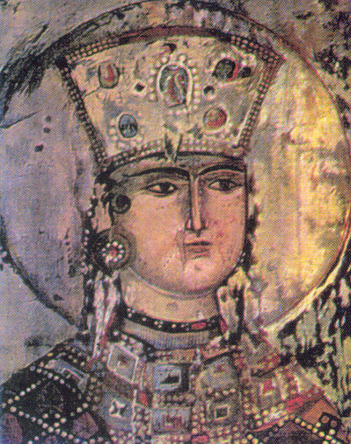

დავით IV აღმაშენებელი (დ. 1073,[3] ქუთაისი — გ. 24 იანვარი, 1125[4][5]) — საქართველოს მეფე 1089-1125 წლებში, გიორგი II-ის ძე, დიდი სახელმწიფო მოღვაწე და ძლევამოსილი მხედართმთავარი, რომელსაც განსაკუთრებული ადგილი უკავია საქართველოს ისტორიაში.
დავით IV ტახტზე 1089 წელს 16 წლის ასაკში ავიდა. მამამისი, გიორგი II, შექმნილი პოლიტიკური მდგომარეობიდან გამომდინარე, იძულებული გახდა შვილის სასარგებლოდ ტახტზე უარი ეთქვა. დავითს ძალიან მძიმე მემკვიდრეობა ერგო: ქვეყანა დარბეული იყო მტრის შემოსევებისაგან, თურქ-სელჩუკთა მომთაბარე ტომები სახლდებოდნენ დაპყრობილ ტერიტორიებზე და ქართველ ხალხს ფიზიკური განადგურების საფრთხეს უქმნიდნენ, დიდგვაროვანი ფეოდალები მეფეს ხშირად არ ემორჩილებოდნენ, საქართველოს მეფის ხელისუფლება ლიხის ქედის აღმოსავლეთით არ ვრცელდებოდა.

დავით აღმაშენებლის პიროვნების შესაფასებლად მნიშვნელოვანია მისი ტოლერანტობა როგორც სხვა ეთნოსების, ისე რელიგიების მიმართ. XII საუკუნის პირველი მეოთხედის საქართველოში დავით აღმაშენებელი თავის რელიგიურ პოლიტიკაში ატარებდა სარწმუნოებათა თავისუფლების — რჯულთშემწყნარებლობის პრინციპს, რაც იმ დროისათვის მეტად უჩვეულო მოვლენა იყო. ქართველი ისტორიკოსებისაგან განსხვავებით, თითქმის ყველა უცხოელი ისტორიკოსი, რომელიც იმ პერიოდის საქართველოს შეეხო, არ დარჩენილა გულგრილი ქართველ მეფეთა ტოლერანტობისადმი და საგანგებო მინიშნებებით დაახასიათა იგი. დავითი მკაცრად იცავდა მაჰმადიან ქვეშევრდომთა რწმენას და მისი შეურაცხყოფის უფლებას არავის აძლევდა. მუსლიმანთა უფლებები პრივილეგირებულ მდგომარეობაში იყო ეკონომიკურ და ფინანსურ დარგებშიც. არაბი ისტორიკოსის — იბნ-ალ-ჯაუზის ცნობით, დავით მეფე თავის შვილთან — დემეტრესთან ერთად პარასკევობით მეჩეთში დადიოდა, ლოცვას ესწრებოდა და წასვლისას დიდძალ ფულს სწირავდა.[99] დავით აღმაშენებელმა მქადაგებლებს, სუფიებსა და ასკეტებს სასახლეები აუშენა. თუკი მაჰმადიანი თბილისიდან წასვლას დააპირებდა, მას სამგზავრო ფული ეძლეოდა. იბნ-ალ-ჯაუზი დაასკვნის, რომ საქართველოს მეფეები „მაჰმადიანებს უფრო მეტი პატივისცემით ეპყრობოდნენ, ვიდრე თვით მუსლიმანთა ხელმწიფენი“.[99] დავით აღმაშენებელი ისლამის დიდი მცოდნე იყო და განჯის ყადის ხშირად იმაზეც კი ეკამათებოდა, თუ ყურანი საიდან წარმოსდგაო. მეფე ყოველმხრივ უწყობდა ხელს საქართველოში მცხოვრებ სომხებს.[99] უფლებრივად ქრისტიან მოსახლეობასთან იყვნენ გათანაბრებულნი ებრაელებიც.[100]
თამარი, თამარ მეფე (დ. დაახ. 1160 — გ. 1213, შესაძლოა 1210 ან 1207) — საქართველოს მონარქი 1184 წლიდან, გიორგი III-ის ასული, ბაგრატიონთა სამეფო დინასტიის წარმომადგენელი. თამარს საქართველოს ოქროს ხანაში მოუწია მეფობა და უაღრესად წარმატებული მმართველი აღმოჩნდა. თამარი ატარებდა ტიტულს: „მეფეთ მეფე და დედოფალთ დედოფალი აფხაზთა, ქართველთა, რანთა, კახთა და სომეხთა, შირვანთა და შაჰანშათა და ყოვლისა აღმოსავლეთისა და დასავლეთისა თვითმფლობელობითა მპყრობელი“.
გიორგი რუსის გაძევების შემდეგ თამარის ქმრობის მსურველნი კვლავ გამოჩნდნენ. ესენი იყვნენ სხვადასხვა ქვეყნის უფლისწულები, ქრისტიანები თუ მუსლიმანები. მაგრამ ახალი ქორწინების საკითხის გადაწყვეტა უკვე იოლი აღარ იყო ბევრი კანდიდატი უარით გაისტუმრეს. საქართველოში ჩამოვიდა აღსართან შირვანშაჰი, რომელიც თამარის ქმრობის ღირსად ჩათვლის შემთხვევაში „რჯულის დაგდების“ მზადყოფნაში იყო. თუმცა აღსართანს უარი უთხრეს[8]. რუსუდან დედოფალი თამარის შესაფერის საქმროდ ოსთა უფლისწულს, დავით სოსლანს მიიჩნევდა. ქართულ ისტორიოგრაფიაში განმტკიცებულია მოსაზრება, რომ დავით სოსლანი ოსეთში დამკვიდრებული ბაგრატიონთა შტოს წარმომადგენელი იყო. ეს შტო მომდინარეობს სრულიად საქართველოს მეფის გიორგი I-ისა და ალდე დედოფლის ვაჟის დემეტრესგან. მხითარ გოშის ცნობით, „თამარმა, გიორგი მეფის ასულმა, განიშორა პირველი ქმარი, რუსთა მეფის ძე და შეირთო სხვა ქმარი, ალანთა სამეფოდან, თავისი ნათესავი დედის მხრიდან, სახელით სოსლანი, რომელიც გამეფებისას დავითად იწოდა“.[26] თამარი დავით სოსლანთან ქორწინებას დათანხმდა. ამის შემდეგ, დიდებულები რუსუდან დედოფლისა და „გაზრდილი მისი“ დავითის წამოსაყვანად ოსეთში გაემართნენ. ქორწილის მსვლელობას, რომლის გამართვაც დიდუბის სასახლეში („სანახებსა ტფილისისა“) გადაწყდა, რუსუდანი ხელმძღვანელობდა. დღემდე მოღწეულია თამარის ქორწილისათვის მიძღვნილი ხალხური ლექსები.